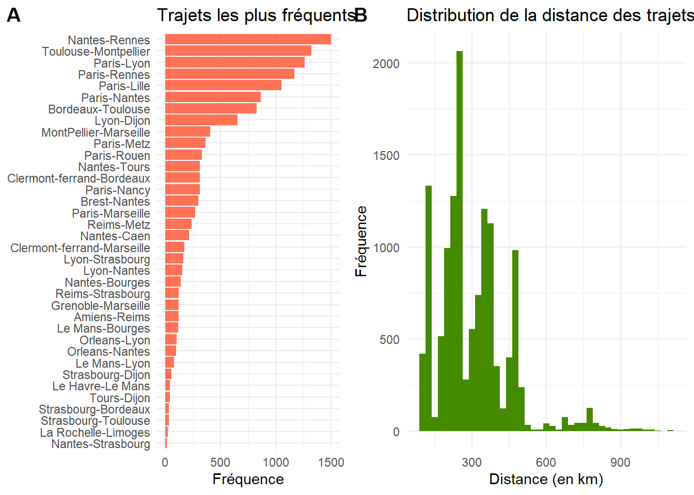
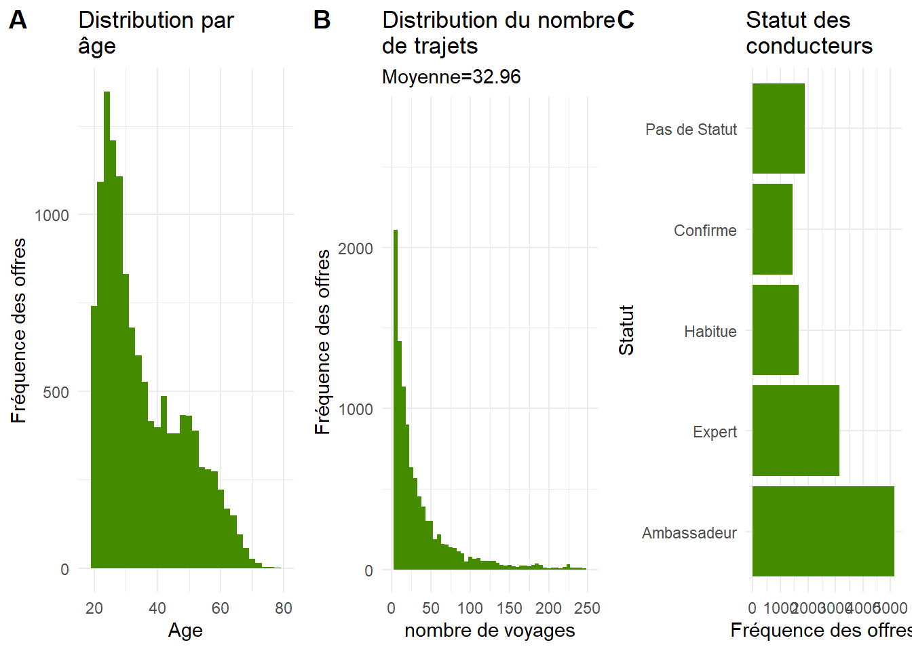
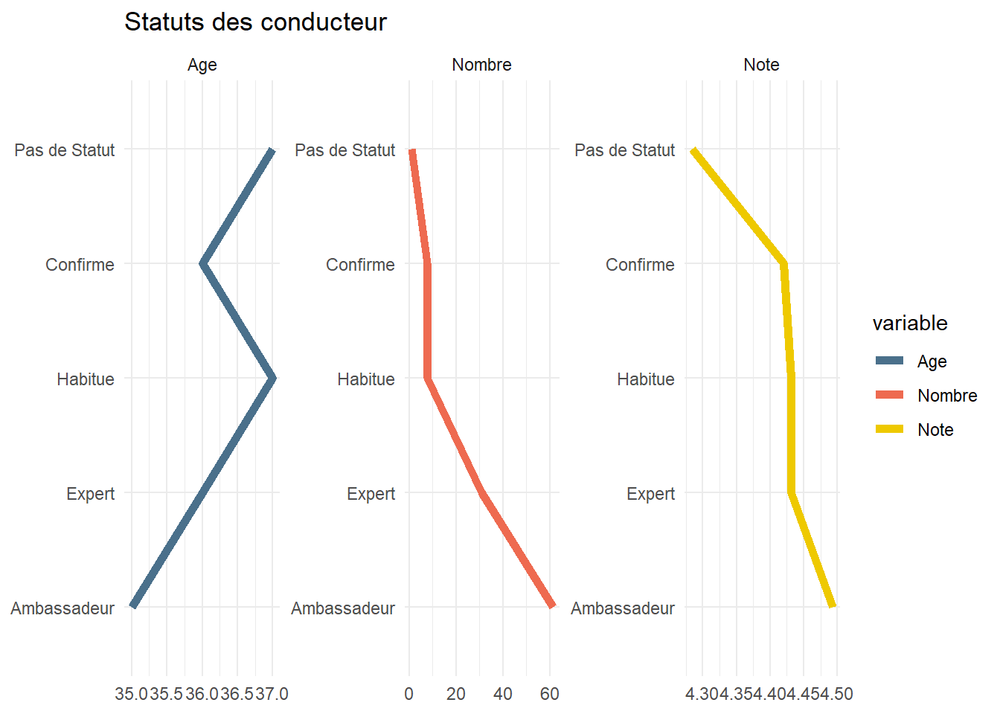
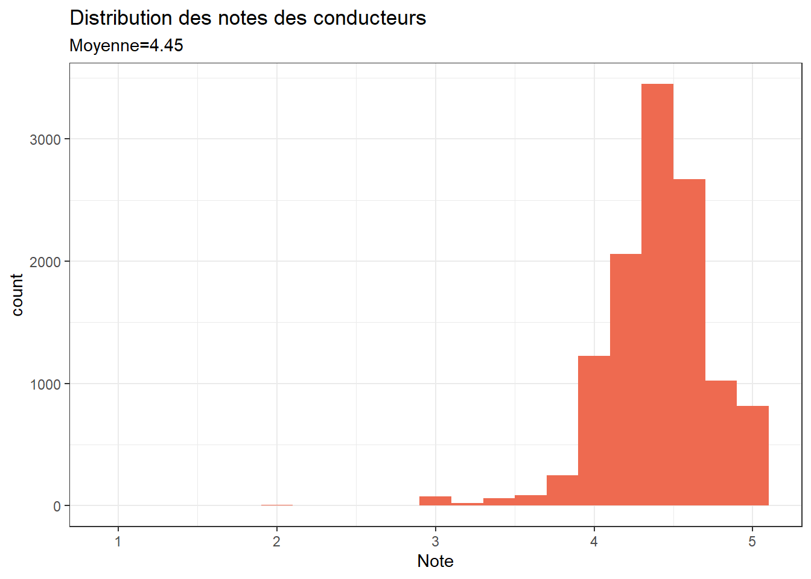

Chapitre 9 9 - Régression
9.1 Une étude de cas : les offres Blablacar
C’est un jeu de données scrappées sur un site de covoiturage constitué de 13000 offres proposées sur différents types de trajet à un moment donné (au cours de 2016). Le but va être de tester l’effet des signaux de qualité sur les taux de réservation, et de mieux comprendre la nature d’une plateforme qui étant de fait une place de marché se propose d’être collaborative.
Si elles ne sont plus d’actualité, elle permettent cependant une étude intéressante des facteurs qui encourage la demande dans un moment où le modèle DREAMS de Blablacar était mis en avant pour résoudre le problème de la confiance dans le monde digital : comment échanger avec des inconnus.
df <- read_delim("./data/covoit.csv", ";", escape_double = FALSE, trim_ws = TRUE)
df<- df%>% dplyr::rename(Places=`Places Restantes`,
Depart=`Ville Depart Capture`,
Arrivee=`Ville Arrivee Capture`,
Flex=`Flexibilite Horaire`
)
df<-df %>%
filter( Distance<1200)
#on recode le nombre de places restantes par une approximation du taux de réservation
df$Occup<- NA
df$Occup[df$Places==0]<-1
df$Occup[df$Places==1]<-.75
df$Occup[df$Places==2]<-.50
df$Occup[df$Places==3]<-.25
df$Occup[df$Places==4]<-0
df$Occup[df$Places>=4]<-0
#l'expérience peut se capter par le nombre de voyages
df$Nombre[is.na(df$Nombre)]<-0Voici la liste des requêtes et le nombre d’offres obtenues pour chacune d’elle. On observe la domination des trajet inter-régionaux avec Nantes-Rennes, Toulouse-Montpellier et Bordeaux-Toulouse. Les trajets ont été échantillonnés pour représenter différents niveaux d’échelle de distance, les courts trajets, les trajets de 100 à 200 km, ceux à 300-400 et une minorité de distances plus longues, ce qui explique la concentration à certains niveaux.
La distribution ne représente pas la distribution de la demande des trajets ou de l’offre, mais un pool d’offres obtenus pour une séries de requête relatives à un trajet donné, un jour donné.
trajet<-table(df$Depart, df$Arrivee)
df$trajet<-paste0(df$Depart,"-",df$Arrivee)
foo<-df %>% mutate(n=1)%>%
group_by(trajet)%>%
summarise(n=sum(n))%>%filter(n>0)
g01<-ggplot(foo,aes(x=reorder(trajet,n), y=n))+
geom_bar(stat="identity", fill="coral1")+
coord_flip()+
labs(title="Trajets les plus fréquents", x=NULL, y="Fréquence")
g02<-ggplot(df, aes(x=Distance))+
geom_histogram(fill="Chartreuse4",binwidth = 25) +
labs(title = "Distribution de la distance des trajets", y="Fréquence", x= "Distance (en km)")
plot_grid(
g01, g02,
labels = "AUTO", ncol = 2
)
9.1.1 Les caractérisques de l’offre
l’offre se détermine par plusieurs éléments
- le véhicule
- le conducteur
- les conditions du trajets
9.1.1.1 Le véhicule
Rôle de la marque et du standing du véhicule mérite plus de recodage. Il est très subjectif, ici on privilégie les origines nationales qui expriment un style, un esprit d’automobile.
df$Marque[df$Marque=="Alfa-romeo"]<-"Alfa Romeo, Lancia"
df$Marque[df$Marque=="Alfa Romeo"]<-"Alfa Romeo, Lancia"
df$Marque[df$Marque=="Lancia"]<-"Alfa Romeo, Lancia"
df$Marque[df$Marque=="Volvo"]<-"Volvo, Saab"
df$Marque[df$Marque=="Zx"]<-"Citroen"
df$Marque[df$Marque=="Saab"]<-"Volvo, Saab"
df$Marque[df$Marque=="Audi-quattro"]<-"Audi"
df$Marque[df$Marque=="Mercedes"]<-"Mercedes-benz"
df$Marque[df$Marque=="Vw"]<-"Volkswagen"
df$Marque[df$Marque=="Kia"]<-"Autres Asie"
df$Marque[df$Marque=="Honda"]<-"Autres Asie"
df$Marque[df$Marque=="Mazda"]<-"Autres Asie"
df$Marque[df$Marque=="Suzuki"]<-"Autres Asie"
df$Marque[df$Marque=="Isuzu"]<-"Autres Asie"
df$Marque[df$Marque=="Mitsubishi"]<-"Autres Asie"
df$Marque[df$Marque=="Lexus"]<-"Autres Asie"
df$Marque[df$Marque=="Subaru"]<-"Autres Asie"
df$Marque[df$Marque=="Daewoo"]<-"Autres Asie"
df$Marque[df$Marque=="Huanghai"]<-"Autres Asie"
df$Marque[df$Marque=="Land"]<-"Rover, jaguar, mini"
df$Marque[df$Marque=="Rover"]<-"Rover, jaguar, mini"
df$Marque[df$Marque=="Jaguar"]<-"Rover, jaguar, mini"
df$Marque[df$Marque=="Abarth"]<-"Rover, jaguar, mini"
df$Marque[df$Marque=="Ldv"]<-"Rover, jaguar, mini"
df$Marque[df$Marque=="Austin"]<-"Rover, jaguar, mini"
df$Marque[df$Marque=="Mini"]<-"Rover, jaguar, mini"
df$Marque[df$Marque=="Chevrolet"]<-"Autres US"
df$Marque[df$Marque=="Chrysler"]<-"Autres US"
df$Marque[df$Marque=="Jeep"]<-"Autres US"
df$Marque[df$Marque=="Dodge"]<-"Autres US"
df$Marque[df$Marque=="Lamborghini"]<-"Sport"
df$Marque[df$Marque=="Maserati"]<-"Sport"
df$Marque[df$Marque=="Porsche"]<-"Sport"
df$Marque[df$Marque=="Ac"]<-"Autres"
df$Marque[df$Marque=="Acura"]<-"Autres"
df$Marque[df$Marque=="eacute"]<-"Autres"
df$Marque[df$Marque=="Iveco"]<-"Autres"
df$Marque[df$Marque=="Camping-car"]<-"Autres"
df$Marque[df$Marque=="Infiniti"]<-"Autres"
df$Marque[df$Marque=="Admiral"]<-"Autres"
df$Marque[df$Marque=="Sport"]<-"Autres"
foo<-df %>%
group_by(Marque)%>%
summarise(n=n())%>%
drop_na()
ggplot(foo, aes(x=reorder(Marque, n), y=n))+
geom_bar(stat="identity",fill="Chartreuse4") +
coord_flip() +
scale_y_log10()+
labs(title= "Distribution des offres par marque", x=NULL)9.1.1.2 L’âge et l’expérience du capitaine
On distingue deux populations en terme d’âge, une en dessous de la trentaine, l’autre de 40 à 50 ans. On Jette un coup d’oeil ensuite sur la relation entre l’âge et la note qui culmine à 30 ans et baisse avec les décades. Est-ce l’effet d’une inadéquation des âges? La demande est-elle plus jeune que l’offre? Cela crée-t-il un biais systématique d’évaluation?
Le conducteur se manifeste au travers de 3 critères : le statut attribué par blablacar, son expérience traduite par le nombre de voyages qu’il a fait ( et pour lesquels il a été évalué). La note moyenne obtenue des passagers.
g03<-ggplot(df, aes(x=Age))+
geom_histogram(fill="Chartreuse4", binwidth = 2)+
labs(title="Distribution par \nâge", y="Fréquence des offres")+xlim (18, 80)
df$Statut<-as.factor(df$Statut)
df$Statut <- factor(df$Statut, ordered = TRUE,
levels = c("Ambassadeur", "Expert", "Habitue", "Confirme","Pas de Statut"))
g04<-ggplot(df, aes(x=Statut))+
geom_bar(fill="Chartreuse4") +
coord_flip()+
labs(title = "Statut des \nconducteurs", y="Fréquence des offres")
mean<-round(mean(df$Nombre,na.rm=TRUE),2)
g05<-ggplot(df, aes(x=Nombre))+
geom_histogram(fill="Chartreuse4", binwidth = 5)+
labs(title = "Distribution du nombre \nde trajets", y=" Fréquence des offres",
subtitle =paste0("Moyenne=", mean),
x="nombre de voyages")+
xlim(0,250)
plot_grid(
g03, g05,g04,
labels = "AUTO", ncol = 3
)
L’expérience se distribue de manière très inégale, une minorité de conducteurs ayant réalisé plus de 50 voyages, une très grande majorité en ayant fait moins d’une vingtaine de voyages.
Examinons le statut et notamment en comparant l’expérience et l’évaluation.
foo<-df %>%
group_by(Statut)%>%
summarise(Note=mean(Note,na.rm=TRUE),
Nombre=mean(Nombre,na.rm=TRUE),
Age=round(mean(Age,na.rm=TRUE),0))%>%
pivot_longer(-Statut,names_to = "variable",values_to = "Moyenne" )
ggplot(foo, aes(x=Statut, y=Moyenne,group=variable))+
geom_line(aes(color=variable), size=2)+
coord_flip()+
facet_wrap(vars(variable),scales ="free", ncol=3)+
labs(title = "Statuts des conducteur", x=NULL, y=NULL)+
scale_color_manual(values=c("skyblue4", "coral2", "Gold2"))
9.1.1.3 Le trajet
Le conducteur peut être flexible dans l’horaire de départ ou pas. Un recodage est cependant nécessaire.Le trajet peut être strict ou comporter des détours. Là aussi besoin d’un peu de recodage.
df$Flex[df$Flex!="Depart pile a l'heure" & df$Flex!="Pas d'indication"]<-"Voir avec le conducteur"
df$Flex[is.na(df$Flex)]<-"Pas d'indication"
g07<-ggplot(df, aes(x=Flex))+
geom_bar(fill="Chartreuse4")+
coord_flip()+
labs(title="Flexibilité de l'horaire de départ", x=NULL, y="Fréquence")
df$Detour[df$Detour=="De 30 minutes max"]<-"Plus de 15 mn"
df$Detour[df$Detour=="Autant que possible"]<-"Plus de 15 mn"
g08<-ggplot(df, aes(x=Detour))+geom_bar(fill="Chartreuse4") +
coord_flip()+labs(title="Acceptation des détours à l'arrivée", x=NULL)
plot_grid(
g07, g08,
labels = "AUTO", ncol = 2
)9.2 Notes, prix et taux d’occupations
Les notes sont en moyenne de 4.45 et fortement déviées à droite, réduisant la capacité de discrimination.
mean<-round(mean(df$Note,na.rm=TRUE),2)
ggplot(df, aes(x=Note))+
geom_histogram(fill="coral2",binwidth = .2)+
theme_bw() +
labs(title = "Distribution des notes des conducteurs", subtitle =paste0("Moyenne=", mean))
9.3 Analyse des prix
Au premier examen la distribution des prix semble être multimodale, elle est étroitement associée à la distribution des distance et de notre stratégie d’échantillonage des paires départ/destination.
Le prix est une multiplication de la distance par un tarif kilométrique, même si la relation ne semble pas tout à faire linéaire. La convexité de la courbe signale une sorte de rendement croissant avec la distance (incorporation du prix des péages ou effet de rareté ?).
C’est pourquoi on calcule un tarif au km, qui lui n’est plus corrélé ou à peine à la distance parcourue. Voici les résultats principaux.
g20<-ggplot(df, aes(x=Prix))+geom_bar(fill="firebrick2") +
labs(title = "Distribution des prix",
x="Prix du trajet")
g21<-ggplot(df, aes(x=Distance, y=Prix))+
geom_point(color="firebrick2", alpha =0.5) +
geom_smooth(method="gam")+scale_x_log10()+
labs(title = "Corrélation des distances et des prix", x= "Distance en km")
df$prix_km<-df$Prix/df$Distance
g22<-ggplot(df, aes(x=prix_km))+
geom_histogram(fill="firebrick3", binwidth = 0.005) +
labs(title = "Distribution des prix au km", x="Prix au km (euros)")+xlim(0,0.15)
g23<-ggplot(df, aes(x=Distance, y=prix_km))+
geom_point(color="firebrick3") +
geom_smooth(method="gam")+
scale_x_log10()+labs(x="Distance en km")+
ylim(0,0.15)
plot_grid(
g20, g21,g22,g23,
labels = "AUTO", ncol = 2
)9.4 Analyser la demande : qu’est ce qui détermine le taux d’occupation ?
On utilise la variable nombre de place restante qu’on traduit par un indicateur codé de 0 (tout est libre) à 1 (la voiture est pleine). En voici la distribution.
ggplot(df, aes(x=Occup))+
geom_bar(fill="gold3") +
labs(title="Distribution du taux d'occupation des véhicules",
y="Nombre d'offres", x= "Taux d'occupation")9.4.1 Un modèle OLS
On commence par un modèle simple et linéaire où l’on cherche à expliquer, prédire, le taux d’occupation du véhicule en fonction des variables dont nous disposons. La flexibilité de l’horaire et la possibilité de détour n’affecte pas vraiment le taux de réservation. Si les autres variables ont des relations significatives ( avec des valeur t très élevées), on notera que la variance expliquée est faible.
Le remplissage des voiture est une affaire de loto. Ce qui se comprend, car la probabilité qu’une offre et une demande coïncide est relativement faible si on retient une plage horaire étroite pour le passager qui l’élargira pour accroître le choix au prix d’un effort de recherche supplémentaire.
df$AgeClasse<- round(df$Age/10,0)*10
df$AgeClasse[df$AgeClasse==80]<-70
df$AgeClasse[df$AgeClasse==90]<-70
df$AgeClasse[df$AgeClasse==100]<-70
df$AgeClasse<-as.factor(df$AgeClasse)
fit0<-lm(Occup~AgeClasse+log(Distance+1)+prix_km+Flex+Detour+Autoroute+log(Nombre+1)+Note, data=df)
fit1<-lm(Occup~AgeClasse+log(Distance+1)+prix_km+Flex+Detour+Autoroute+log(Nombre+1)*Note, data=df)
fit_logit<-lm(Occup~AgeClasse+ Marque+log(Distance+1)+prix_km+Flex+Detour+Autoroute+log(Nombre+1)*Note, data=df)
export_summs(fit0, fit1,plot.distributions = TRUE,scale = FALSE, digits = 3)| Model 1 | Model 2 | |
|---|---|---|
| (Intercept) | 0.217 *** | 0.495 *** |
| (0.053) | (0.080) | |
| AgeClasse30 | -0.007 | -0.007 |
| (0.007) | (0.007) | |
| AgeClasse40 | -0.054 *** | -0.053 *** |
| (0.008) | (0.008) | |
| AgeClasse50 | -0.039 *** | -0.038 *** |
| (0.009) | (0.009) | |
| AgeClasse60 | -0.018 | -0.017 |
| (0.010) | (0.010) | |
| AgeClasse70 | -0.024 | -0.023 |
| (0.023) | (0.023) | |
| log(Distance + 1) | 0.029 *** | 0.027 *** |
| (0.006) | (0.006) | |
| prix_km | -3.896 *** | -3.910 *** |
| (0.386) | (0.385) | |
| FlexPas d'indication | 0.012 * | 0.012 * |
| (0.006) | (0.006) | |
| FlexVoir avec le conducteur | 0.012 | 0.013 |
| (0.025) | (0.025) | |
| DetourDe 15 minutes max | -0.004 | -0.004 |
| (0.006) | (0.006) | |
| DetourPlus de 15 mn | -0.065 * | -0.064 * |
| (0.027) | (0.027) | |
| AutorouteOui | 0.119 *** | 0.121 *** |
| (0.016) | (0.016) | |
| log(Nombre + 1) | -0.010 *** | -0.152 *** |
| (0.002) | (0.030) | |
| Note | 0.062 *** | 0.002 |
| (0.008) | (0.015) | |
| log(Nombre + 1):Note | 0.032 *** | |
| (0.007) | ||
| N | 11719 | 11719 |
| R2 | 0.027 | 0.029 |
| *** p < 0.001; ** p < 0.01; * p < 0.05. | ||
plot_summs(fit0, fit1,plot.distributions = TRUE,
omit.coefs=c("MarqueAudi",
"MarqueAutres",
"MarqueAutres Asie" ,
"MarqueAutres US",
"MarqueBmw",
"MarqueCitroen" , "MarqueDacia","MarqueFiat",
"MarqueFord",
"MarqueHyundai",
"MarqueMercedes-benz","MarqueNissan","MarqueOpel",
"MarquePeugeot","MarqueRenault ",
"MarqueRover, jaguar, mini",
"MarqueSeat",
"MarqueSkoda","MarqueToyota","MarqueVolkswagen","MarqueVolvo", "Saab"))Le modèle tient même s’il explique très peu de variance. Les tests sont cependant significatifs et même si l’effet est faible il est notable.
Voici des diagrammes d’effets qui représentent la valeur de la variable dépendante pour une plage de variation des variables indépendantes prises une à une, en fonction du modèle. On voit ainsi plus clairement que le taux d’occupation passe de 20% environ quand la note est de 3 (les notes inférieures sont rares!) à 45% quand la moyenne du conducteur frôle les 5.
g10<-effect_plot(fit1, pred=AgeClasse,interval = TRUE ,data=df)+
geom_line(color="gold3",size=2)+
labs(title="Effet de l'âge sur le taux d'occupation",
x="Classe d'âge",
y="Taux d'occupation"
)
g11<-effect_plot(fit1, pred=Flex,interval = TRUE ,data=df)+
geom_line(color="gold3",size=2)+
labs(title="Effet de la flexibilité au départ",
y="Taux d'occupation")
g12<-effect_plot(fit1, pred=Autoroute,interval = TRUE ,data=df)+
geom_line(color="gold3",size=2)+
labs(title="Effet de l'autoroute",
y="Taux d'occupation")
g13<-effect_plot(fit1, pred=Detour, interval = TRUE ,data=df)+
geom_line(color="gold3",size=2)+
labs(title="Effet des conditions d'arrivée", x="Détour",
y="Taux d'occupation")
plot_grid(
g10, g11,g12,g13,
labels = "AUTO", ncol = 2
)g16<-effect_plot(fit1, pred=Note,interval = TRUE ,data=df)+
geom_line(color="gold3",size=2)+
labs(title="Effet de la note",
y="Taux d'occupation")
g17<-effect_plot(fit1, pred=Nombre,interval = TRUE ,data=df)+
geom_line(color="gold3",size=2)+
labs(title="Effet du nombre de trajets",
y="Taux d'occupation")
g18<-effect_plot(fit1, pred=Distance,interval = TRUE ,data=df)+
geom_line(color="gold3",size=2)+
labs(title="Effet de la distance",
y="Taux d'occupation")
g19<-interact_plot(fit1, pred=Nombre,modx=Note,interval = TRUE ,data=df)+
geom_line(color="gold3",size=2)+
labs(title="Effet d'interaction nombre de trajets x note",
y="Taux d'occupation")
plot_grid(
g16, g17,g18,g19,
labels = "AUTO", ncol = 2
)La particularité du modèle est le terme d’interaction. L’expérience du conducteur traduite par le nombre de trajets qu’il a effectué est gage de sécurité, de confiance, pourvu que ses notes soient bonnes. On s’attend à ce que si elle sont moins bonnes, le nombre de voyages réalisés en amplifiera l’impact négatif. L’expérience signale aussi la crédibilité de la note, et on peut raisonnablement penser que plus ce nombre est grand et plus le signal, positif ou négatif est crédible. Ici la note module l’effet de crédibilité.
L’analyse de l’interaction est claire : quand les contenus sont négatifs , l’expérience du conducteur aggrave la réticence et le taux d’occupation se réduit. Quand les notes vont meilleures que la moyenne.L’amplification par l’expérience de l’effet des notes sur la réservation est moindre. L’interaction est significative (t=8.76). Reste à comprendre pourquoi la tendance générale reste à une relation négative entre le taux de remplissage et le nombre de trajet effectué . Est-ce le résultat d’une participation fréquente à la plateforme, à un comportement particulier des conducteurs très actifs (opportunisme) ? Une explication complémentaire peut venir de ceux qui pratique occasionnellement le covoiturage, leur activité étant plus rare , elle est peut être plus planifiée, et les offres sont présentes depuis plus longtemps que celles des utilisateurs fréquents qui publieraient leurs annonces de la veille au lendemain. Ceci mérite une analyse plus approfondie que nous ne ménerons pas ici.
9.5 Autres modèles
Dans la pratique la construction d’un modèle de régression dépend de trois éléments :
- la spécification fonctionnelle qui définit f(y, X) autrement dit ce qui relie ce qu’on observe à ce qui peut lui être corrélé de manière linéaires ou moins linéaires. La forme fonctionnelle dépend largement de la variable dépendante et de sa distribution :
** normale : ** log-normale voire exponentielle ** binaire ** proportionnelle ** dénombrement. Il s’agit des données de comptages : un nombre d’achat au cours d’une période par exemple. poisson, NBD ** Les durées sont positives,
Dans ce cas on va utiliser une méthode de modèle linéaire généralisé (GLM) qui reposent sur 3 éléments:
- Un prédicteur linéaire (\(\eta\)) qui décrit la combinaison linéaire des variables explicatives.
\[\eta=\sum_{n=1}^{10}\beta_{0}+\beta_{i}x_{i}\]
- Une fonction de lien : Contrairement aux modèles linéaires classiques, les valeurs prédites par le prédicteur linéaire ne correspondent pas à la prédiction moyenne d’une observation, mais à une transformation mathématique. Les beta sont estimés après transformation des réponses selon la fonction de lien choisie.
\[g(\mu_{y})=\eta\]
Par exemple, pour les données de comptage :
\[log(\mu_{y})=\eta\] ou dans le cas de données binaire ( modèle de régression logistique) \[log(\frac{\mu_{y}}{1-\mu_{y}})=\eta\]
Le but de la fonction de lien est de contraindre les valeurs prédites à être dans l’échelle des valeurs observées. Ainsi, dans le cas des données de comptage, qui sont obligatoirement positives, ou nulles, la fonction de lien log contraint les valeurs prédites par le prédicteur linéaire à devenir également positives ou nulles après l’emploi de la fonction inverse du log.
- La structure d’erreur : A une fonction de lien donnée, correspond généralement une structure d’erreur particulière.Il s’agit d’une famille de distribution des erreurs. Par exemple, pour les données de comptage, la fonction de lien est le log et la structure d’erreur correspondante est la distribution de Poisson. Cette structure d’erreur, permet notamment de spécifier correctement la relation entre la moyenne et la variance. Cette relation est utilisée par l’approche de maximum de vraisemblance pour estimer les coefficients des paramètres (les beta) du GLM.
Ici un tableau récapitulatif des structures d’erreurs, fonctions de lien, fonctions de moyennes et fonctions de variance des données de type numériques continues non bornée, de comptage et binaire.
- Estimation par une méthode de maximum de vraisemblance et de déviance qui est en quelque sorte une généralisation de la variance.
9.5.1 Régression logistique
Sur les même données mais en considérant le taux d’occupation plus sérieusement : il est compris entre 0 et 1 et se prête don à un modèle logistique, car le taux d’occupation va de 0 à 100% même si nous n’avons que 4 niveaux. ça fait un modèle plus réaliste qui ajuste la valeur prédite entre 0 et 1.
Pour mieux prendre en compte l’hétérogénéité du set de données (composée par un échantillon de requêtes) on introduit les trajets comme composante aléatoire.
l’estimation est réalisée avec lme4
Les effets semblent être ici plus pertinent et sensibles mais surtout l’effet d’interaction semble renforcé. L’effet de la note est là clairement amplifié pour les notes négatives mais aussi pour les notes positives.
fit_logit<-glm(Occup~Age+log(Distance+1)+prix_km+Flex+Detour+Autoroute+log(Nombre+1)*Note,family="binomial", data=df)
summ(fit_logit)| Observations | 11719 (1586 missing obs. deleted) |
| Dependent variable | Occup |
| Type | Generalized linear model |
| Family | binomial |
| Link | logit |
| χ²(11) | 106.04 |
| Pseudo-R² (Cragg-Uhler) | 0.02 |
| Pseudo-R² (McFadden) | 0.01 |
| AIC | 15784.58 |
| BIC | 15873.00 |
| Est. | S.E. | z val. | p | |
|---|---|---|---|---|
| (Intercept) | 0.07 | 0.56 | 0.13 | 0.90 |
| Age | -0.00 | 0.00 | -2.61 | 0.01 |
| log(Distance + 1) | 0.11 | 0.04 | 2.79 | 0.01 |
| prix_km | -16.30 | 2.72 | -6.00 | 0.00 |
| FlexPas d’indication | 0.05 | 0.04 | 1.20 | 0.23 |
| FlexVoir avec le conducteur | 0.05 | 0.17 | 0.29 | 0.77 |
| DetourDe 15 minutes max | -0.01 | 0.04 | -0.24 | 0.81 |
| DetourPlus de 15 mn | -0.27 | 0.19 | -1.39 | 0.16 |
| AutorouteOui | 0.50 | 0.11 | 4.50 | 0.00 |
| log(Nombre + 1) | -0.64 | 0.21 | -2.97 | 0.00 |
| Note | 0.00 | 0.11 | 0.01 | 0.99 |
| log(Nombre + 1):Note | 0.13 | 0.05 | 2.77 | 0.01 |
| Standard errors: MLE |
g10<-effect_plot(fit_logit, pred=AgeClasse,interval = TRUE ,data=df)+
geom_line(color="gold3",size=2)+
labs(title="Effet de l'âge sur le taux d'occupation",x="Classe d'âge",
y="Taux d'occupation")
g11<-effect_plot(fit_logit, pred=Flex,interval = TRUE ,data=df)+
geom_line(color="gold3",size=2)+
labs(title="Effet de la flexibilité au départ sur le taux d'occupation",
y="Taux d'occupation")
g12<-effect_plot(fit_logit, pred=Autoroute,interval = TRUE ,data=df)+
geom_line(color="gold3",size=2)+
labs(title="Effet de l'autoroute sur le taux d'occupation",
y="Taux d'occupation")
g13<-effect_plot(fit_logit, pred=Detour, interval = TRUE ,data=df)+
geom_line(color="gold3",size=2)+
labs(title="Effet des conditions d'arrivée sur le taux d'occupation", x="Détour",
y="Taux d'occupation")
plot_grid(
g10, g11,g12,g13,
labels = "AUTO", ncol = 2
)g16<-effect_plot(fit_logit, pred=Note,interval = TRUE ,data=df)+
geom_line(color="gold3",size=2)+
labs(title="Effet de la note",
y="Taux d'occupation")
g17<-effect_plot(fit_logit, pred=Nombre,interval = TRUE ,data=df)+
geom_line(color="gold3",size=2)+
labs(title="Effet du nombre de trajets",
y="Taux d'occupation")
g18<-effect_plot(fit_logit, pred=Distance,interval = TRUE ,data=df)+
geom_line(color="gold3",size=2)+
labs(title="Effet de la distance",
y="Taux d'occupation")
g19<-interact_plot(fit_logit, pred=Nombre,modx=Note,interval = TRUE ,data=df)+
geom_line(color="gold3",size=2)+
labs(title="Effet d'interaction nombre de trajets x note",
y="Taux d'occupation")
plot_grid(
g16, g17,g18,g19,
labels = "AUTO", ncol = 2
)9.5.2 Modèle de comptage
et un dernier qui revient aux données originelles : le comptage des place disponibles. Dans ce type de situation (données de comptage), on considère que ce type de variable se distribue selon une loi de poisson, dont la propriété est l’égalité de la moyenne et de l’écart-type.
On s’assure qu’il n’y ait pas de surdispersion en calculant le ratio de la variance résiduelle par le nombre de degré de liberté. Il est ici de l’ordre de 1 et donc on conclura à une absence de surdispersion, même si en comparant la distribution empiriques du nombre de places restantes à la distribution théorique d’une loi de poisson, l’ajustement n’est pas parfait.
mean_places<-mean(df$Places)
mean_sd<-sd(df$Places)
set.seed(1234) # permet de simuler toujours les mêmes comptages.
theoretic_count <-rpois(nrow(df),mean_places)
# on incorpore ces comptages théoriques dans un data frame
tc_df <-data.frame(theoretic_count)
ggplot(df,aes(Places))+
geom_bar(fill="#1E90FF", alpha=0.5)+
geom_bar(data=tc_df, aes(theoretic_count,fill="#1E90FF", alpha=0.5))+
theme_classic()#+ theme(legend.position="none") df$Occup[df$Occup==1]<-.999
df$Occup[df$Occup==0]<-.001
fit_poisson <- glm(Places~Age+log(Distance+1)+prix_km+Flex+Detour+Autoroute+log(Nombre+1)*Note, family="poisson",data = df)
summary(fit_poisson)##
## Call:
## glm(formula = Places ~ Age + log(Distance + 1) + prix_km + Flex +
## Detour + Autoroute + log(Nombre + 1) * Note, family = "poisson",
## data = df)
##
## Deviance Residuals:
## Min 1Q Median 3Q Max
## -2.51367 -0.74448 0.03874 0.60289 2.13066
##
## Coefficients:
## Estimate Std. Error z value Pr(>|z|)
## (Intercept) 0.6879101 0.1897188 3.626 0.000288 ***
## Age 0.0019560 0.0005095 3.839 0.000123 ***
## log(Distance + 1) -0.0513430 0.0137967 -3.721 0.000198 ***
## prix_km 7.6872057 0.9123308 8.426 < 2e-16 ***
## FlexPas d'indication -0.0236138 0.0140880 -1.676 0.093704 .
## FlexVoir avec le conducteur -0.0109685 0.0595949 -0.184 0.853974
## DetourDe 15 minutes max 0.0023592 0.0137864 0.171 0.864125
## DetourPlus de 15 mn 0.1349013 0.0620044 2.176 0.029580 *
## AutorouteOui -0.2434932 0.0347369 -7.010 2.39e-12 ***
## log(Nombre + 1) 0.2883459 0.0713807 4.040 5.36e-05 ***
## Note -0.0088294 0.0362270 -0.244 0.807444
## log(Nombre + 1):Note -0.0592471 0.0159474 -3.715 0.000203 ***
## ---
## Signif. codes: 0 '***' 0.001 '**' 0.01 '*' 0.05 '.' 0.1 ' ' 1
##
## (Dispersion parameter for poisson family taken to be 1)
##
## Null deviance: 11105 on 11718 degrees of freedom
## Residual deviance: 10889 on 11707 degrees of freedom
## (1586 observations deleted due to missingness)
## AIC: 38248
##
## Number of Fisher Scoring iterations: 5fit_poisson2 <- glm(Places~Age+log(Distance+1)+prix_km+Flex+Detour+Autoroute+log(Nombre+1)*Note, family="quasipoisson",data = df)
export_summs(fit_logit,fit_poisson2, fit_poisson2)| Model 1 | Model 2 | Model 3 | |
|---|---|---|---|
| (Intercept) | 0.07 | 0.69 *** | 0.69 *** |
| (0.56) | (0.15) | (0.15) | |
| Age | -0.00 ** | 0.00 *** | 0.00 *** |
| (0.00) | (0.00) | (0.00) | |
| log(Distance + 1) | 0.11 ** | -0.05 *** | -0.05 *** |
| (0.04) | (0.01) | (0.01) | |
| prix_km | -16.30 *** | 7.69 *** | 7.69 *** |
| (2.72) | (0.75) | (0.75) | |
| FlexPas d'indication | 0.05 | -0.02 * | -0.02 * |
| (0.04) | (0.01) | (0.01) | |
| FlexVoir avec le conducteur | 0.05 | -0.01 | -0.01 |
| (0.17) | (0.05) | (0.05) | |
| DetourDe 15 minutes max | -0.01 | 0.00 | 0.00 |
| (0.04) | (0.01) | (0.01) | |
| DetourPlus de 15 mn | -0.27 | 0.13 ** | 0.13 ** |
| (0.19) | (0.05) | (0.05) | |
| AutorouteOui | 0.50 *** | -0.24 *** | -0.24 *** |
| (0.11) | (0.03) | (0.03) | |
| log(Nombre + 1) | -0.64 ** | 0.29 *** | 0.29 *** |
| (0.21) | (0.06) | (0.06) | |
| Note | 0.00 | -0.01 | -0.01 |
| (0.11) | (0.03) | (0.03) | |
| log(Nombre + 1):Note | 0.13 ** | -0.06 *** | -0.06 *** |
| (0.05) | (0.01) | (0.01) | |
| N | 11719 | 11719 | 11719 |
| AIC | 15784.58 | ||
| BIC | 15873.00 | ||
| Pseudo R2 | 0.02 | 0.02 | 0.02 |
| *** p < 0.001; ** p < 0.01; * p < 0.05. | |||
9.5.3 Modèle de régression beta
Encore une autre variation avec le modèle de regression beta qui s’attache à modéliser des variables de proportion par une loi de distribution beta dont la caractéristiques est d’être souple et de s’adapter à toute forme de distribution en respectant la contrainte de varier entre presque 0 et presque 1. Elle dépend de deux paramètres \(\alpha\) et \(\beta\)
curve(dbeta(x, 4, 12),
col = "pink1",
lwd = 2)
curve(dbeta(x, 8, 4),
add = TRUE, col = "pink2",
lwd = 2)
curve(dbeta(x, 4, 4),
add = TRUE, col = "pink3",
lwd = 2)La spécificité de la régression beta est de modéliser les deux paramètre de la fonction de distribution par deux équation linéraire. L’une ajustant la moyenne, l’autre ajustant la dispersion.
#recodage
df$Occup[df$Occup==1]<-.999
df$Occup[df$Occup==0]<-.001
fit_beta1 <- betareg(Occup~AgeClasse+log(Distance+1)+prix_km+Flex+Detour+Autoroute+log(Nombre+1)*Note, data = df)
summary(fit_beta1)##
## Call:
## betareg(formula = Occup ~ AgeClasse + log(Distance + 1) + prix_km + Flex +
## Detour + Autoroute + log(Nombre + 1) * Note, data = df)
##
## Standardized weighted residuals 2:
## Min 1Q Median 3Q Max
## -2.5648 -0.4721 -0.1841 0.1925 2.5672
##
## Coefficients (mean model with logit link):
## Estimate Std. Error z value Pr(>|z|)
## (Intercept) 0.477618 0.346880 1.377 0.16854
## AgeClasse30 -0.055681 0.030938 -1.800 0.07189 .
## AgeClasse40 -0.305290 0.035616 -8.572 < 2e-16 ***
## AgeClasse50 -0.196017 0.039618 -4.948 7.51e-07 ***
## AgeClasse60 -0.134592 0.044980 -2.992 0.00277 **
## AgeClasse70 -0.220373 0.099999 -2.204 0.02754 *
## log(Distance + 1) 0.119285 0.024997 4.772 1.82e-06 ***
## prix_km -17.809578 1.675785 -10.628 < 2e-16 ***
## FlexPas d'indication 0.029596 0.025342 1.168 0.24285
## FlexVoir avec le conducteur -0.060868 0.108458 -0.561 0.57465
## DetourDe 15 minutes max -0.008982 0.024985 -0.360 0.71922
## DetourPlus de 15 mn -0.284942 0.119009 -2.394 0.01665 *
## AutorouteOui 0.540004 0.068146 7.924 2.30e-15 ***
## log(Nombre + 1) -0.846267 0.132436 -6.390 1.66e-10 ***
## Note -0.049875 0.066261 -0.753 0.45163
## log(Nombre + 1):Note 0.179977 0.029493 6.102 1.04e-09 ***
##
## Phi coefficients (precision model with identity link):
## Estimate Std. Error z value Pr(>|z|)
## (phi) 1.08213 0.01123 96.36 <2e-16 ***
## ---
## Signif. codes: 0 '***' 0.001 '**' 0.01 '*' 0.05 '.' 0.1 ' ' 1
##
## Type of estimator: ML (maximum likelihood)
## Log-likelihood: 2788 on 17 Df
## Pseudo R-squared: 0.0308
## Number of iterations: 25 (BFGS) + 2 (Fisher scoring)Dans une régression bêta, a variable dépendante est distribuée selon la loi bêta avec une espérance μ et une variance μ⋅(1-μ)/(1+ϕ). Ainsi, ϕ est un paramètre de précision : plus ϕ est élevé, plus la variance est faible pour une moyenne μ donnée. Le paramètre de précision ϕ peut dépendre des régresseurs comme la moyenne.
C’est ce qui est spécifié ci-dessous, en reliant le px au km à ce paramètre de dispersion. La valeur est élevée, la valeur p extrêmement faible, on en déduit qu’effectivement, plus le prix au kilomètre est élevé et plus faible est la variance de la distribution.
fit_beta2 <- betareg(Occup~AgeClasse+log(Distance+1)+prix_km+Flex+Detour+Autoroute+log(Nombre+1)*Note|prix_km, data = df)
summary(fit_beta2)##
## Call:
## betareg(formula = Occup ~ AgeClasse + log(Distance + 1) + prix_km + Flex +
## Detour + Autoroute + log(Nombre + 1) * Note | prix_km, data = df)
##
## Standardized weighted residuals 2:
## Min 1Q Median 3Q Max
## -2.8774 -0.4693 -0.1836 0.1952 4.4017
##
## Coefficients (mean model with logit link):
## Estimate Std. Error z value Pr(>|z|)
## (Intercept) 0.36456 0.34639 1.052 0.29259
## AgeClasse30 -0.04898 0.03093 -1.583 0.11332
## AgeClasse40 -0.30011 0.03558 -8.436 < 2e-16 ***
## AgeClasse50 -0.19509 0.03957 -4.930 8.20e-07 ***
## AgeClasse60 -0.13058 0.04488 -2.909 0.00362 **
## AgeClasse70 -0.21690 0.09991 -2.171 0.02992 *
## log(Distance + 1) 0.12737 0.02497 5.100 3.39e-07 ***
## prix_km -16.90573 1.66364 -10.162 < 2e-16 ***
## FlexPas d'indication 0.03339 0.02530 1.320 0.18690
## FlexVoir avec le conducteur -0.06949 0.10821 -0.642 0.52076
## DetourDe 15 minutes max -0.00998 0.02496 -0.400 0.68922
## DetourPlus de 15 mn -0.30605 0.11831 -2.587 0.00969 **
## AutorouteOui 0.52620 0.06900 7.627 2.41e-14 ***
## log(Nombre + 1) -0.84903 0.13213 -6.426 1.31e-10 ***
## Note -0.04752 0.06600 -0.720 0.47155
## log(Nombre + 1):Note 0.18104 0.02943 6.152 7.64e-10 ***
##
## Phi coefficients (precision model with log link):
## Estimate Std. Error z value Pr(>|z|)
## (Intercept) -0.6573 0.0877 -7.495 6.63e-14 ***
## prix_km 12.1320 1.4288 8.491 < 2e-16 ***
## ---
## Signif. codes: 0 '***' 0.001 '**' 0.01 '*' 0.05 '.' 0.1 ' ' 1
##
## Type of estimator: ML (maximum likelihood)
## Log-likelihood: 2826 on 18 Df
## Pseudo R-squared: 0.03075
## Number of iterations: 29 (BFGS) + 3 (Fisher scoring)